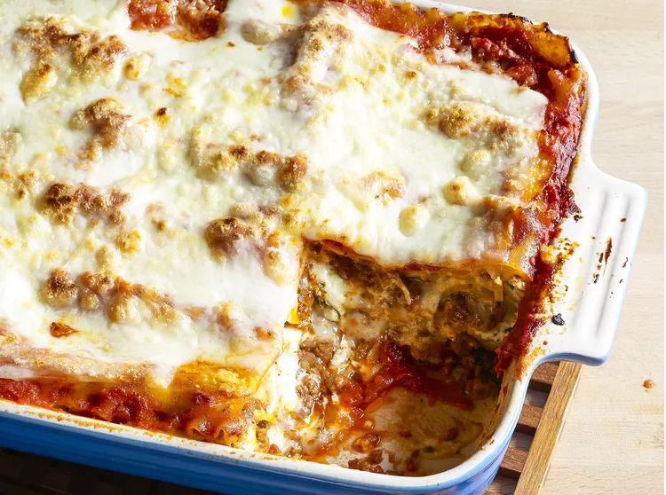

Lasagna

Description
A timeless dish with layers of pasta, hearty meat sauce,
and creamy cheese, perfect for a family dinner.
Ingrediants
- 12 lasagna noodles
- 1 lb ground beef
- 1 jar (24 oz) marinara sauce
- 2 cups ricotta cheese
- 2 cups shredded mozzarella cheese
- ½ cup grated Parmesan cheese
- 1 egg
- 1 tsp dried Italian seasoning
- Salt and pepper to taste
Steps
- Cook Noodles: Boil lasagna noodles until al dente, drain, and set aside.
- Prepare Meat Sauce: Brown ground beef in a skillet, season with salt and pepper, and stir in marinara sauce. Simmer for 10 minutes.
- Mix Cheese Filling: In a bowl, combine ricotta cheese, Parmesan, egg, and Italian seasoning.
- Layer: Spread a thin layer of meat sauce in a baking dish.
Add a layer of noodles, a layer of ricotta mixture, more meat sauce, and a sprinkle of mozzarella.
Repeat layers, ending with mozzarella on top.
- Bake: Cover with foil and bake at 375°F (190°C) for 30 minutes.
Remove foil and bake for an additional 10 minutes to brown the cheese.
- Cool and Serve: Let the lasagna rest for 10 minutes before slicing and serving.